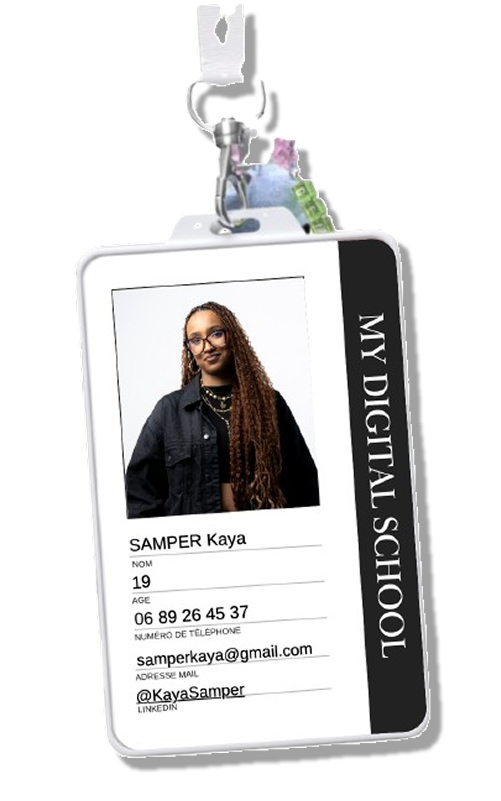

Passionnée par le design et la direction artistique, j’aime créer des univers visuels modernes, harmonieux et impactants. identité visuelle, webdesign, contenus créatifs… j’accorde une grande importance aux détails, aux couleurs et aux émotions que chaque projet doit transmettre. Curieuse et en constante exploration, j’expérimente entre graphisme, photo et vidéo pour affiner mon style. Je n’ai peut-être pas encore un portfolio rempli de grands projets, mais j’ai une créativité sans limites et l’envie de donner vie à des visuels qui marquent.
J’exprime ma créativité à travers des projets mêlant design graphique, direction artistique et web.De la création d’identités visuelles à la conception de maquettes ou de marques fictives, jusqu’à la refonte de sites, chaque projet est pour moi une occasion d’innover et de donner vie à des concepts uniques, esthétiques et cohérents.
Les Dunkeuses est une équipe féminine de basket inspirée par l’univers WNBA. Elles souhaitaient moderniser leur image pour attirer de nouveaux talents et booster leur présence en ligne. J’ai conçu une identité visuelle dynamique et impactante, à l’image de leur énergie et de leur détermination.
Année
2024
Catégorie
Branding
Patounes douces est une association qui recueil les animaux pour les mettre dans des familles d’accueil afin de les faire adopter. J’ai donc dû m’occuper de faire la maquette pour le nouveau site.
Année
2025
Catégorie
Maquettage

(click me)
Chrome line est un magazine spécialiser dans les voitures, sa première édition traite du courant rétrofutiriste dans l’automobile.
Année
2025
Catégorie

Culturôtoits est une ferme en hydroponie, j’ai du créer la maquette et intégrer le site internet pour l’entreprise.
Année
2025
Catégorie
Intégration Web